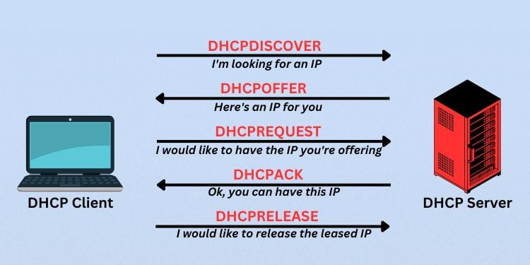

|
A DHCP egy fedél alatti mechanizmus, amely automatizálja az IP-címek hozzárendelését a vezetékes vagy vezeték nélküli fix és mobil gazdagépekhez. Amikor egy eszköz hozzá akar férni egy DHCP-t használó hálózathoz, kérést küld egy DHCP-kiszolgáló által felvett IP-címre. A szerver válaszként IP-címet küld az eszköznek, majd figyeli a cím használatát, és egy meghatározott idő elteltével vagy az eszköz leállása után visszaveszi. |
 |
Nem lehet két felhasználója ugyanazzal az IP-címmel, mert az ütközést eredményezne, ha az egyik vagy mindkét eszköz nem tud csatlakozni a hálózathoz.
A DHCP kiküszöböli az emberi hibákat, így minimálisra csökken a címütközések, a konfigurációs hibák vagy az egyszerű elírási hibák.
A DHCP központosított és automatizált TCP/IP konfigurációt biztosít. DHCP közvetítő ügynök telepítésével nincs szükség DHCP-kiszolgálóra minden alhálózaton.
A DHCP hatékonyan kezeli a vezetékes vagy vezeték nélküli hálózatokon különböző helyekre költöző, hordozható eszközöket használó felhasználók IP-címének módosításait.
A DHCP nemcsak kiosztja a címeket, hanem automatikusan vissza is veszi és visszaküldi a készletbe, ha már nem használják.
A DHCP segítségével egy szervezet egyszerűen módosíthatja IP-címsémáját egyik címtartományról a másikra. A DHCP lehetővé teszi a hálózati rendszergazdák számára, hogy a végfelhasználók megzavarása nélkül hajtsák végre ezeket a változtatásokat.